Let
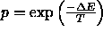
be a vector from the space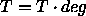
, where N is the sum of the number of weights and of the number of biases of the network. Let E be the error function we want to minimize.SCG differs from other CGMs in two points:
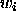
, where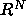
is a new conjugate direction, and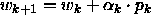
is the size of the step in this direction. Actually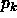
is a function of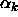
, the Hessian matrix of the error function, namely the matrix of the second derivatives. In contrast to other CGMs which avoid the complex computation of the Hessian and approximate with
a time-consuming line search procedure, SCG makes the following simple
approximation of the term
with
a time-consuming line search procedure, SCG makes the following simple
approximation of the term 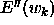
, a key component of the computation of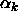
:
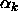
which is supposed to regulate the indefiniteness of the Hessian. This is a kind of Levenberg-Marquardt method [P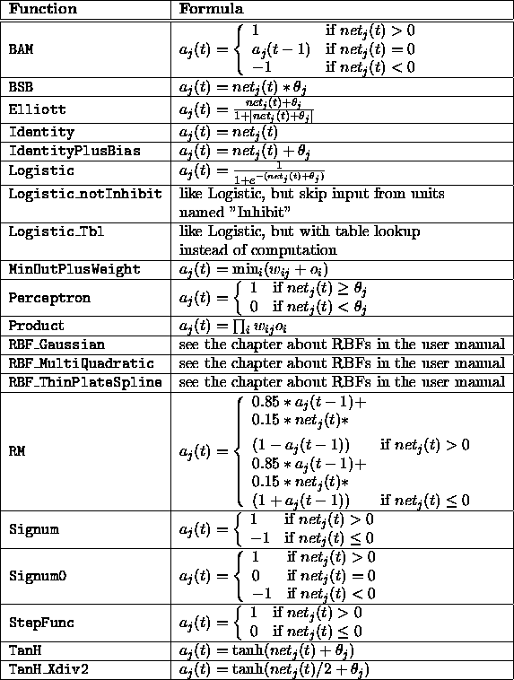
88], and is done by setting: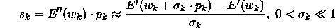
and adjusting  at each iteration. This is
the main contribution of SCG to both fields of neural learning and
optimization theory.
at each iteration. This is
the main contribution of SCG to both fields of neural learning and
optimization theory.
SCG has been shown to be considerably faster than standard backpropagation and than other CGMs [Mol93].